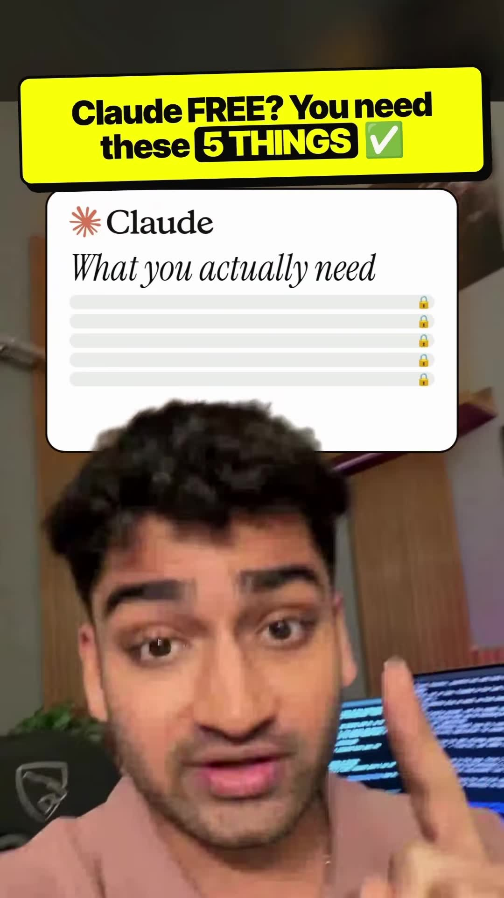
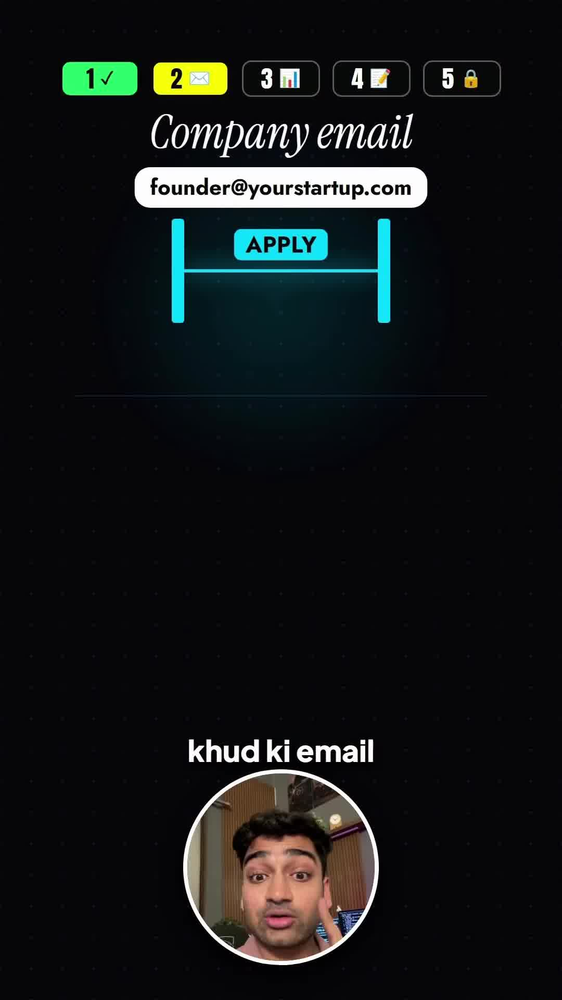
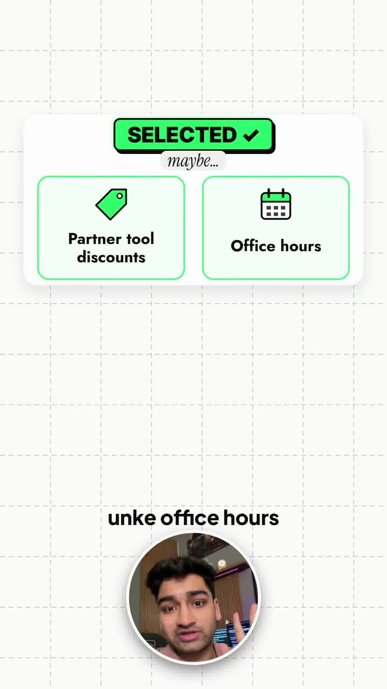

Executive Summary
Across developer social media, viral creators frequently promote "Free Unlimited Claude 3.5 Sonnet" clickbait hooks, claiming anyone can get instant thousands of dollars in free Anthropic API credits. In reality, Anthropic's official Claude for Startups Program enforces strict institutional vetting, manual application review, and incorporated business validation.
In this breakdown, AI educator Naman Soni dispels the hype and reveals the exact 5-point verification checklist required to successfully secure up to $25,000 in Anthropic API credits, free Claude Team workspace seats, and technical office hours with Anthropic researchers.
Core Visual Demonstrations



The 5-Point Eligibility & Application Checklist
1. Legitimate Incorporation (Not an Idea or Side Project)
Anthropic requires applicants to be incorporated legal entities (C-Corp, LLC, or Private Limited).
- Company must be less than 5 years old.
- Must have raised institutional capital (Venture Capital, angel syndicates, or established accelerator like YC/Techstars) within the preceding 24 months.
2. Corporate Domain Authentication
Applications submitted with generic consumer email providers (@gmail.com, @outlook.com, @proton.me) trigger automated instant rejections. The applicant email must match an active corporate domain (e.g. founder@yourstartup.com) featuring a live, accessible product landing page.
3. Pre-Existing Console Activity & Baseline Usage
Anthropic looks for evidence that you are already actively building on the Claude API. Having an active Anthropic Console account with existing API key creation, prompt playground experiments, or test inference spend signals committed product development rather than speculative credit hoarding.
4. Specific Architectural Defense for Claude
The application requires a written technical justification: "Why is Claude 3.5 Sonnet or Claude Opus uniquely suited to your product architecture?"
- Strong Answer: Referencing specific model strengths such as 200k token context reasoning, state-of-the-art vision extraction, multi-hop function calling, or deterministic code generation.
- Weak Answer: Generic statements like "We want to build an AI chatbot."
5. Current Program Capacity & Manual Review Protocol
Following the explosion of AI coding agents and viral developer interest, Anthropic temporarily suspended instant batch approvals. All submissions are placed into manual review queues. Do not rely on credits for immediate production launches; budget for standard credit card billing while awaiting a 2-to-4 week review turnaround.